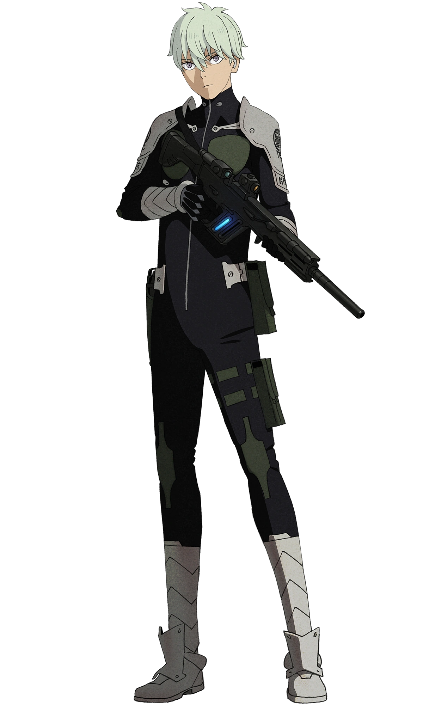
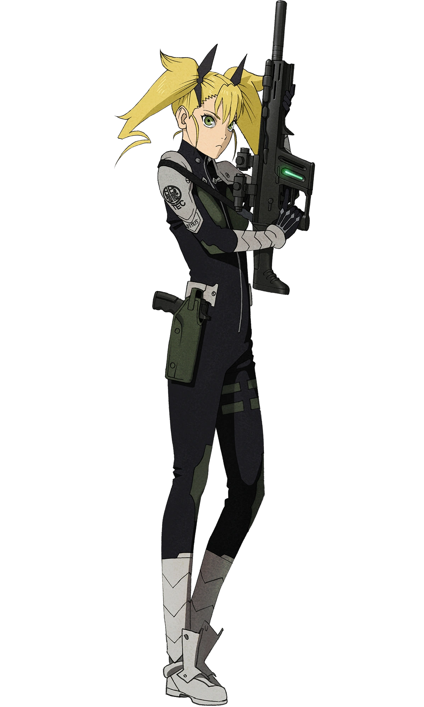
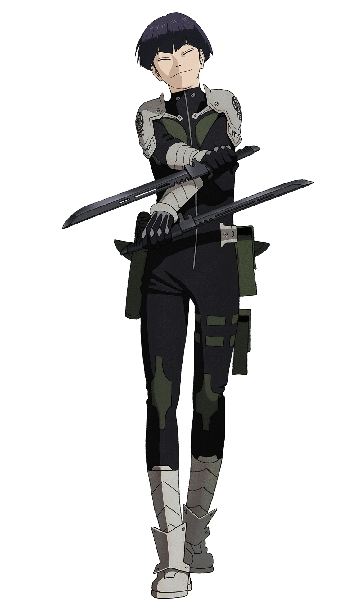
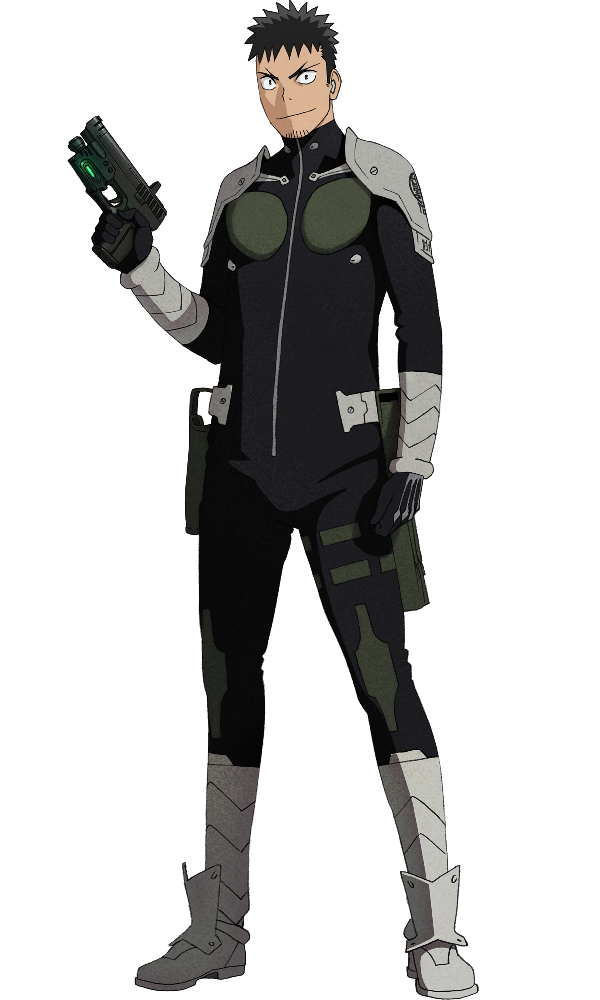
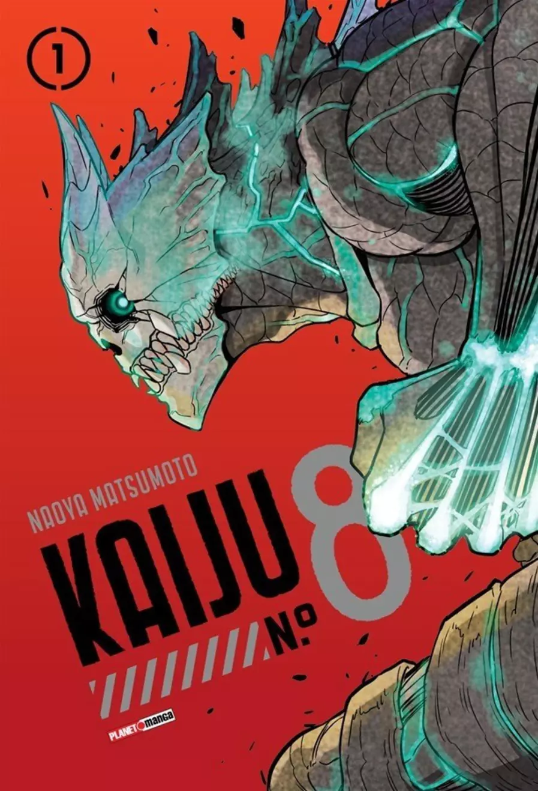

Kaiju N° 8
"Kaiju No. 8" (também conhecido como "Kaijuu 8-gou" ou "Monster #8") é um mangá japonês escrito e ilustrado por Naoya Matsumoto. Publicado pela primeira vez em julho de 2020 na plataforma digital Shonen Jump+ da Shueisha, o mangá rapidamente ganhou popularidade por sua trama envolvente e personagens cativantes.
Sinopse
Kafka Hibino e sua amiga de infância, Mina Ashiro, prometeram um ao outro que se juntariam à Força de Defesa Kaiju após sobreviverem a um ataque de kaiju em sua cidade natal. Mina conseguiu realizar seu sonho e se tornou uma das mais respeitadas capitãs da Força de Defesa, liderando batalhas contra os monstros. No entanto, Kafka, agora com 32 anos, não conseguiu passar nos testes de admissão e trabalha como limpador na Monster Sweeper Inc., removendo os restos das batalhas.
A vida de Kafka muda drasticamente quando um pequeno kaiju voador entra em seu corpo e ele se transforma em um kaiju humanoide, recebendo o codinome Kaiju No. 8 pelas forças de defesa. Com sua nova forma, Kafka possui habilidades sobre-humanas, força e regeneração, mas luta para manter sua humanidade e esconder sua identidade de kaiju.
Determinando-se a utilizar seus novos poderes para finalmente cumprir sua promessa de infância, Kafka decide tentar novamente entrar na Força de Defesa. Ele se junta ao novo recrutamento e, com sua experiência prática e sua forma kaiju secreta, consegue impressionar seus superiores e se destacar entre os novos recrutas.
Ao longo da história, Kafka enfrenta várias batalhas contra kaijus poderosos, enquanto tenta manter sua identidade em segredo de seus colegas, incluindo Mina, que agora é sua comandante. Ele é acompanhado por outros recrutas, incluindo Reno Ichikawa, um jovem determinado que se torna seu amigo próximo, e Kikoru Shinomiya, uma prodígio cujo pai é um dos líderes da Força de Defesa.
À medida que a história avança, Kafka descobre que sua transformação em kaiju não foi acidental e que há uma conspiração maior envolvendo a origem dos kaijus e sua própria transformação. Ele enfrenta dilemas morais e éticos sobre o uso de seus poderes, a lealdade à humanidade e a batalha constante para proteger aqueles que ama.
A narrativa de "Kaiju No. 8" equilibra ação intensa, drama emocional e momentos de comédia, explorando temas de perseverança, amizade, identidade e sacrifício. Kafka Hibino, como Kaiju No. 8, deve navegar entre seus deveres como membro da Força de Defesa e as complicações de ser meio humano, meio monstro, em uma luta constante para proteger seu mundo dos perigos que o ameaçam.
Personagens Principais
Kafka Hibino:
é o protagonista de "Kaiju No. 8". Ele é um personagem complexo e multifacetado, cuja vida toma um rumo inesperado após sua transformação em um kaiju humanoide. A seguir, uma descrição detalhada de suas características físicas, personalidade, habilidades e trajetória.- Idade: 32 anos.
- Altura: 1,80 m.
- Aparência: Kafka é um homem de constituição mediana, com cabelo curto e preto e olhos castanhos. Ele tem uma expressão frequentemente cansada, refletindo sua vida de trabalho duro e frustração por não ter realizado seu sonho
- Transformação em Kaiju: Quando se transforma no Kaiju No. 8, Kafka assume uma forma humanoide monstruosa. Nessa forma, ele tem uma pele escura e escamosa, olhos brilhantes e características físicas que combinam força bruta e agilidade.
- Determinação: Kafka é extremamente determinado, nunca desistindo de seu sonho de infância de se juntar à Força de Defesa Kaiju, apesar das repetidas falhas.
- Altruísmo: Ele possui um forte senso de dever e altruísmo, desejando proteger os outros dos perigos dos kaijus, mesmo antes de adquirir seus poderes.
- Humildade e Empatia: Kafka é humilde e empático, muitas vezes colocando os sentimentos e necessidades dos outros acima dos seus próprios. Ele é um amigo leal e alguém em quem os outros podem confiar.
- Humor: Apesar das adversidades, Kafka mantém um senso de humor e uma atitude positiva, usando o riso como um mecanismo de enfrentamento.
- Força Sobre-Humana: Na forma de Kaiju No. 8, Kafka possui força física extraordinária, capaz de enfrentar e derrotar kaijus de grande porte.
- Regeneração: Ele tem a habilidade de regenerar partes do corpo danificadas rapidamente, tornando-o extremamente difícil de ferir permanentemente.
- Agilidade e Velocidade: Kafka é extremamente ágil e rápido em sua forma kaiju, permitindo-lhe desviar de ataques e se mover rapidamente pelo campo de batalha.
- Resiliência: Sua forma kaiju é altamente resistente a danos, permitindo-lhe suportar ataques que seriam fatais para um ser humano comum.
- Mina Ashiro: Amiga de infância e inspiração constante, Mina é uma capitã na Força de Defesa. Kafka tem grande admiração e respeito por ela, desejando provar seu valor.
- Reno Ichikawa: Um jovem recruta que se torna amigo próximo de Kafka, Reno admira a determinação e o espírito de luta de Kafka.
- Kikoru Shinomiya: Uma prodígio e filha de um dos líderes da Força de Defesa, Kikoru inicialmente subestima Kafka, mas eventualmente reconhece seu valor e habilidades.
Mina Ashiro:
é uma personagem central em "Kaiju No. 8", conhecida por sua força, habilidade e liderança dentro da Força de Defesa Kaiju. Sua trajetória é marcada por uma determinação feroz e um compromisso inabalável com a proteção da humanidade contra os ataques de kaijus. Aqui está uma descrição detalhada de suas características físicas, personalidade, habilidades e trajetória.- Idade: 32 anos.
- Altura: 1,75 m.
- Aparência: Mina tem uma presença imponente, com cabelo longo e preto frequentemente preso em um rabo de cavalo. Seus olhos são de um azul penetrante, refletindo sua determinação e seriedade. Ela possui uma postura firme e confiante, adequada à sua posição de autoridade.
- Uniforme: Mina é vista frequentemente em seu uniforme da Força de Defesa Kaiju, que inclui uma armadura moderna e funcional, destacando seu papel como capitã e seu preparo para a batalha.
- Determinação: Mina é extremamente determinada e focada, dedicando sua vida à proteção contra os kaijus. Sua determinação é inspiradora para seus subordinados e colegas.
- Liderança: Como capitã, ela é uma líder natural, capaz de comandar e inspirar suas tropas em situações de alto risco. Ela é respeitada por sua habilidade de tomar decisões rápidas e eficazes em combate.
- Compromisso: Mina tem um compromisso profundo com sua missão e suas responsabilidades. Ela coloca a segurança da humanidade acima de tudo, muitas vezes sacrificando aspectos de sua vida pessoal.
- Resiliência: Mina é emocionalmente resiliente, capaz de lidar com o estresse e a pressão de seu papel sem se abater. Sua força mental é um pilar para aqueles ao seu redor.
- Empatia e Dureza: Embora ela seja dura e exigente, Mina também é capaz de empatia, especialmente com aqueles que compartilham seu compromisso de proteger os outros, como Kafka.
- Proeza de Combate: Mina é uma combatente extremamente habilidosa, treinada em várias formas de combate e uso de armas pesadas. Sua precisão e eficiência no campo de batalha são lendárias.
- Táticas e Estratégia: Ela possui um excelente entendimento de táticas e estratégias militares, sendo capaz de formular e executar planos complexos durante ataques de kaijus.
- Resiliência Física: Mina tem um alto nível de resistência física, capaz de lutar por longos períodos sem mostrar sinais de cansaço.
- Mira Impecável: Conhecida por sua habilidade de sniper, Mina pode abater kaijus com precisão cirúrgica a longas distâncias, utilizando armas de alta potência.
- Kafka Hibino: Amigo de infância, Mina mantém um vínculo profundo com Kafka, apesar de suas vidas terem seguido caminhos diferentes. Ela o admira por sua perseverança, embora desconheça sua transformação em Kaiju No. 8.
- Subordinados e Colegas: Mina é respeitada por seus subordinados, que a veem como uma líder justa e inspiradora. Ela é capaz de motivar sua equipe a dar o melhor de si em cada missão.
- Rivalidade Profissional: Mina mantém uma relação profissional de respeito e, às vezes, rivalidade com outros oficiais de alto escalão, sempre buscando a excelência em seu trabalho.
Reno Ichikawa
É um personagem central na série "Kaiju No. 8". Jovem, determinado e cheio de potencial, ele se destaca como um novo recruta na Força de Defesa Kaiju, ao lado de Kafka Hibino. Sua jornada é marcada por crescimento pessoal e profissional, à medida que ele aprende a enfrentar os desafios que surgem em um mundo dominado por monstros gigantes.

- Idade: 18 anos.
- Altura: 1,74 m.
- Aparência: Reno é um jovem de estatura média, com cabelo prateado, médio e bem arrumado. Ele possui olhos na cor violeta, expressivos e um rosto juvenil que reflete sua determinação e entusiasmo.
- Uniforme: Como recruta da Força de Defesa Kaiju, Reno usa o uniforme padrão, que inclui uma armadura leve e prática, projetada para agilidade e proteção em combate.
- Determinação: Reno é extremamente determinado e ambicioso, com o objetivo claro de se tornar um defensor eficaz contra os kaijus. Ele trabalha duro para melhorar suas habilidades e provar seu valor.
- Coragem: Apesar de sua juventude, Reno demonstra uma coragem notável em combate, nunca hesitando em enfrentar o perigo para proteger os outros.
- Lealdade: Ele é leal aos seus amigos e colegas, especialmente a Kafka, a quem admira e apoia incondicionalmente. Sua lealdade é uma de suas maiores forças.
- Empatia: Reno tem um coração gentil e empático, sempre preocupado com o bem-estar daqueles ao seu redor. Ele é sensível às emoções e necessidades dos outros, o que o torna um amigo confiável.
- Humildade: Ele reconhece suas limitações e está sempre disposto a aprender e crescer, aceitando críticas construtivas e buscando melhorar constantemente.
- Proeza de Combate: Reno possui habilidades de combate impressionantes para sua idade, incluindo técnicas de luta corpo a corpo e manejo de armas. Ele está em constante treinamento para aprimorar essas habilidades.
- Agilidade e Reflexos: Sua juventude lhe confere agilidade e reflexos rápidos, essenciais para desviar de ataques de kaijus e se mover rapidamente no campo de batalha.
- Mira Precisa: Reno tem uma excelente pontaria, sendo capaz de manejar armas de fogo com alta precisão, o que é crucial nas operações de combate contra kaijus.
- Trabalho em Equipe: Ele se destaca em operações que requerem coordenação e trabalho em equipe, mostrando uma habilidade natural para colaborar com outros e executar planos estratégicos.
- Kafka Hibino: Reno desenvolve uma amizade profunda e leal com Kafka, vendo-o como um mentor e amigo. Ele admira a perseverança de Kafka e se inspira em seu exemplo.
- Kikoru Shinomiya: Embora inicialmente veja Kikoru como uma rival, Reno acaba respeitando suas habilidades e determinação. Eles desenvolvem um relacionamento de respeito mútuo e colaboração.
- Superiores e Colegas: Reno é bem visto por seus superiores e colegas devido à sua dedicação e trabalho duro. Ele é respeitado por sua ética de trabalho e vontade de aprender.
Kikoru Shinomiya
é uma personagem destacada em "Kaiju No. 8", conhecida por sua habilidade excepcional, origem privilegiada e personalidade complexa. Ela desempenha um papel crucial como uma jovem prodígio na Força de Defesa Kaiju, enfrentando desafios pessoais e profissionais ao longo da série.

- Idade: 16 anos.
- Altura: 1,57 m.
- Aparência:Kikoru é uma jovem de estatura média, com cabelo loiro comprido geralmente preso em tranças ou rabos de cavalo. Seus olhos são verdes e expressivos, transmitindo tanto determinação quanto uma certa vulnerabilidade. Sua aparência reflete tanto sua juventude quanto sua natureza disciplinada.
- Uniforme: Como membro da Força de Defesa Kaiju, Kikoru veste o uniforme de combate, que inclui uma armadura leve e funcional projetada para maximizar sua agilidade e proteção durante as batalhas.
- Determinação e Ambição: Kikoru é extremamente determinada e ambiciosa, buscando sempre se destacar e provar seu valor. Ela possui uma forte vontade de superar as expectativas impostas a ela devido à sua origem.
- Confiança e Orgulho: Inicialmente, Kikoru pode parecer arrogante e excessivamente confiante, muitas vezes subestimando os outros ao seu redor. No entanto, essa atitude é em grande parte uma fachada para esconder suas próprias inseguranças.
- Resiliência: Ela demonstra uma grande resiliência emocional e física, nunca se deixando abater pelos desafios ou derrotas. Sua capacidade de se recuperar e continuar lutando é uma de suas maiores forças.
- Empatia Oculta: Embora muitas vezes pareça fria e distante, Kikoru possui uma empatia oculta, especialmente em relação aos seus colegas e subordinados. Com o tempo, ela aprende a expressar melhor essa parte de sua personalidade.
- Combate de Elite: Kikoru é uma combatente prodígio, treinada desde muito jovem em várias formas de combate. Sua habilidade com armas de fogo e corpo a corpo é impressionante, fazendo dela uma lutadora formidável
- Agilidade e Reflexos: Ela possui agilidade e reflexos excepcionais, permitindo-lhe se mover rapidamente e evitar ataques com facilidade. Sua velocidade é um trunfo significativo no campo de batalha.
- Inteligência e Estratégia: Kikoru é altamente inteligente e capaz de formular estratégias eficazes em combate. Sua mente afiada lhe permite analisar situações rapidamente e tomar decisões informadas.
- Força Sobre-Humana: Embora menor em estatura, Kikoru possui uma força surpreendente, resultado de um treinamento rigoroso e especializado.
- Kafka Hibino: Inicialmente, Kikoru vê Kafka como um rival inferior devido à sua idade e experiência. No entanto, ao longo do tempo, ela começa a respeitar sua determinação e habilidades, desenvolvendo uma relação de respeito mútuo.
- Reno Ichikawa: Kikoru e Reno começam como rivais, mas eventualmente desenvolvem uma amizade baseada em respeito e admiração mútua. Ambos se incentivam a crescer e melhorar como combatentes.
- Isao Shinomiya: A relação de Kikoru com seu pai é complexa, marcada por expectativas elevadas e uma busca constante por aprovação. Ela deseja provar a ele que pode ser uma grande guerreira por seus próprios méritos.
- Colegas e Superiores: Kikoru é respeitada por seus colegas e superiores por suas habilidades excepcionais, embora sua atitude inicial possa causar atritos. Com o tempo, ela aprende a colaborar melhor com sua equipe.
Hoshina Soshiro
É um personagem proeminente em "Kaiju No. 8", desempenhando um papel crucial dentro da Força de Defesa Kaiju. Conhecido por suas habilidades excepcionais e personalidade distinta, Hoshina é um personagem multifacetado que combina destreza em combate com um forte senso de dever.

- Idade: 29 anos.
- Altura: 1,71 m.
- Aparência: Hoshina tem uma aparência marcante com cabelo roxo escuro e olhos vermelhos afiados que refletem sua perspicácia e determinação. Seu cabelo é frequentemente visto penteado de forma organizada, e ele mantém uma expressão séria, mas calma.
- Uniforme: Ele veste o uniforme oficial da Força de Defesa Kaiju, que inclui uma armadura funcional e eficiente, adaptada para permitir mobilidade e proteção durante combates intensos.
- Disciplina: Hoshina é extremamente disciplinado, refletindo sua dedicação e comprometimento com a Força de Defesa Kaiju. Ele segue rigorosamente os protocolos e mantém uma postura profissional em todas as situações.
- Calma Sob Pressão: Conhecido por sua calma e compostura, Hoshina é capaz de manter a serenidade mesmo nas situações mais perigosas e estressantes, o que o torna um líder confiável em combate.
- Forte Senso de Dever: Hoshina tem um profundo senso de dever e lealdade à sua missão de proteger a humanidade dos kaijus. Ele está disposto a fazer sacrifícios pessoais para garantir a segurança de outros.
- Mentor e Líder: Ele possui habilidades naturais de liderança e frequentemente age como mentor para recrutas mais jovens, guiando-os e ajudando-os a desenvolver suas habilidades.
- Espadachim de Elite: Hoshina é um espadachim extremamente habilidoso, conhecido por sua capacidade de cortar kaijus com precisão e eficiência. Sua destreza com a espada é lendária dentro da Força de Defesa.
- Reflexos Rápidos: Seus reflexos são incrivelmente rápidos, permitindo-lhe desviar de ataques e reagir instantaneamente em combate. Essa habilidade é crucial para sua sobrevivência e eficácia no campo de batalha.
- Tática e Estratégia: Ele possui uma mente estratégica afiada, capaz de analisar situações complexas e formular planos eficazes para enfrentar kaijus. Sua compreensão tática é um grande trunfo para a Força de Defesa.
- Força e Agilidade: Além de suas habilidades com a espada, Hoshina tem força e agilidade notáveis, tornando-o um combatente formidável tanto em lutas corpo a corpo quanto em ataques à distância.
- Kafka Hibino: Hoshina tem uma relação complexa com Kafka. Embora reconheça o potencial e a determinação de Kafka, ele inicialmente mantém uma postura cautelosa devido à natureza de Kafka como Kaiju No. 8. Com o tempo, Hoshina começa a ver o valor de Kafka como aliado.
- Mina Ashiro: Como colegas de alto escalão, Hoshina e Mina compartilham um respeito mútuo e frequentemente colaboram em estratégias e missões. Eles têm uma relação profissional sólida, baseada na confiança e na competência.
- Subordinados e Recrutas: Hoshina atua como mentor e líder para muitos recrutas, incluindo Reno Ichikawa e outros novos membros da Força de Defesa. Sua orientação e suporte são cruciais para o desenvolvimento deles como combatentes.
Características Físicas
Personalidade
Habilidades e Poderes
Trajetória
Kafka nasceu e cresceu em uma cidade frequentemente atacada por kaijus. Durante um ataque devastador na infância, ele prometeu junto com sua amiga Mina Ashiro que se juntariam à Força de Defesa Kaiju para proteger os outros. Mina conseguiu realizar esse sonho e se tornou uma capitã respeitada, mas Kafka falhou repetidamente nos exames de admissão e acabou trabalhando como limpador de destroços na Monster Sweeper Inc.A vida de Kafka muda quando um pequeno kaiju entra em seu corpo, transformando-o no Kaiju No. 8. Decidido a usar seus novos poderes para finalmente cumprir sua promessa, Kafka tenta novamente se juntar à Força de Defesa. Sua determinação e habilidades únicas o ajudam a se destacar entre os novos recrutas, mas ele enfrenta o desafio constante de esconder sua verdadeira identidade de seus colegas e superiores.
A vida de Kafka muda quando um pequeno kaiju entra em seu corpo, transformando-o no Kaiju No. 8. Decidido a usar seus novos poderes para finalmente cumprir sua promessa, Kafka tenta novamente se juntar à Força de Defesa. Sua determinação e habilidades únicas o ajudam a se destacar entre os novos recrutas, mas ele enfrenta o desafio constante de esconder sua verdadeira identidade de seus colegas e superiores.
Relações
Kafka Hibino é um personagem que combina elementos de luta interna e externa, navegando entre seu desejo de proteger a humanidade e as complicações de sua identidade como Kaiju No. 8. Sua jornada é marcada por crescimento pessoal, desafios éticos e a busca incessante por cumprir sua promessa de infância.

Características Físicas
Personalidade
Habilidades e Poderes
Trajetória
Desde a infância, Mina e Kafka Hibino compartilharam o sonho de se juntar à Força de Defesa Kaiju após sobreviverem a um ataque de kaiju. Mina conseguiu realizar esse sonho, destacando-se rapidamente e subindo na hierarquia até se tornar uma das capitãs mais respeitadas da força.
Como capitã, Mina é responsável por liderar equipes em batalhas contra kaijus, utilizando sua habilidade estratégica e tática para proteger civis e eliminar ameaças. Sua jornada é marcada por inúmeras batalhas e vitórias, que solidificaram sua reputação como uma das melhores.
Relações
Mina Ashiro é uma personagem que exemplifica força, liderança e dedicação. Sua trajetória dentro da Força de Defesa Kaiju e sua relação com Kafka Hibino formam um núcleo emocional significativo na narrativa de "Kaiju No. 8". Sua habilidade de equilibrar empatia e dureza faz dela uma líder admirável e uma guerreira formidável contra as ameaças kaiju.
Características Físicas
Personalidade
Habilidades e Poderes
Trajetória
Reno Ichikawa entra para a Força de Defesa Kaiju com a esperança de proteger a humanidade e fazer a diferença em um mundo ameaçado por monstros gigantes. Desde o início, ele se destaca entre os novos recrutas por sua determinação e habilidades naturais. Sua trajetória é marcada por desafios intensos e batalhas que testam sua coragem e habilidades.
A amizade com Kafka Hibino é um ponto central em sua história. Ele rapidamente se torna amigo e aliado de Kafka, admirando sua determinação e desconhecendo inicialmente sua identidade secreta como Kaiju No. 8. Juntos, eles enfrentam vários desafios e crescem como combatentes.
Relações
Reno Ichikawa é um personagem que simboliza o crescimento e a determinação. Sua jornada na Força de Defesa Kaiju é marcada por desafios e aprendizados, à medida que ele se esforça para se tornar um defensor eficaz contra os kaijus. Com sua coragem, lealdade e desejo de proteger os outros, Reno se destaca como um jovem promissor em um mundo perigoso.
Características Físicas
Personalidade
Habilidades e Poderes
Trajetória
Kikoru Shinomiya vem de uma família influente, sendo filha de Isao Shinomiya, um dos líderes da Força de Defesa Kaiju. Desde cedo, ela foi treinada para seguir os passos de seu pai e se tornar uma defensora excepcional contra os kaijus. Sua trajetória é marcada pela pressão de corresponder às expectativas elevadas de sua família e de provar seu valor independentemente de sua origem.
Ao se juntar à Força de Defesa Kaiju, Kikoru rapidamente se destaca por suas habilidades excepcionais, mas também enfrenta desafios significativos em termos de trabalho em equipe e aceitação por parte de seus colegas. Sua interação com personagens como Kafka Hibino e Reno Ichikawa desempenha um papel crucial em seu desenvolvimento pessoal e profissional.
Relações
Kikoru Shinomiya é uma personagem que representa tanto talento inato quanto crescimento pessoal. Sua jornada na Força de Defesa Kaiju é marcada por desafios e conquistas, à medida que ela aprende a equilibrar sua determinação e orgulho com empatia e colaboração. Com uma combinação de habilidades impressionantes e uma vontade de ferro, Kikoru se destaca como uma jovem prodígio e uma guerreira formidável contra os kaijus.
Características Físicas
Personalidade
Habilidades e Poderes
Trajetória
Hoshina Soshiro é um oficial de alto escalão na Força de Defesa Kaiju, respeitado por suas habilidades excepcionais e liderança eficaz. Desde cedo, ele demonstrou um talento natural para o combate, especialmente no uso da espada, o que o levou a se destacar rapidamente na organização.
Ao longo da série, Hoshina enfrenta diversos desafios, incluindo batalhas intensas contra kaijus poderosos e complexas missões de defesa. Ele desempenha um papel crucial na defesa da humanidade, liderando equipes em missões perigosas e garantindo que os recrutas estejam bem preparados para enfrentar as ameaças.
Relações
Hoshina Soshiro é um personagem que incorpora disciplina, habilidade e liderança. Sua presença na Força de Defesa Kaiju é vital, e sua trajetória reflete sua dedicação incessante à proteção da humanidade. Com uma combinação de habilidades excepcionais e um forte senso de dever, Hoshina é uma figura central e inspiradora na luta contra os kaijus.
Temas e Estilo
"Kaiju No. 8" combina elementos de ação, horror, e comédia, oferecendo uma abordagem refrescante ao gênero de monstros gigantes. A narrativa é bem balanceada, com momentos de alta tensão e batalhas épicas, misturados com situações humorísticas e desenvolvimento de personagens.
Popularidade e Recepção
O mangá foi bem recebido tanto pela crítica quanto pelos fãs, destacando-se pela arte detalhada de Matsumoto e pela construção de mundo intrigante. "Kaiju No. 8" rapidamente se tornou um dos títulos mais populares da Shonen Jump+, com milhões de visualizações e uma base de fãs crescente.
Adaptação
Devido ao seu sucesso, uma adaptação em anime foi anunciada, gerando ainda mais entusiasmo entre os fãs. A data de lançamento e os detalhes sobre o estúdio de animação responsável ainda estão sendo aguardados com grande expectativa.
Conclusão
"Kaiju No. 8" é uma obra que combina ação emocionante com uma narrativa cativante sobre superação e segundas chances. É uma leitura obrigatória para fãs de mangás de ação e monstros, oferecendo uma nova perspectiva sobre o gênero kaiju.
Mangá
| Título | Kaiju N°8, Monster #8, 8Kaijuu. |
|---|---|
| Autor | Naoya Matsumoto |
| Publicação | 03/07/2020 "em andamento" |
| Editora | Jump+ (Shueisha) |
| Volumes | 12 (108 capítulos) |
| Gênero | Ação, Horror, Shounen |